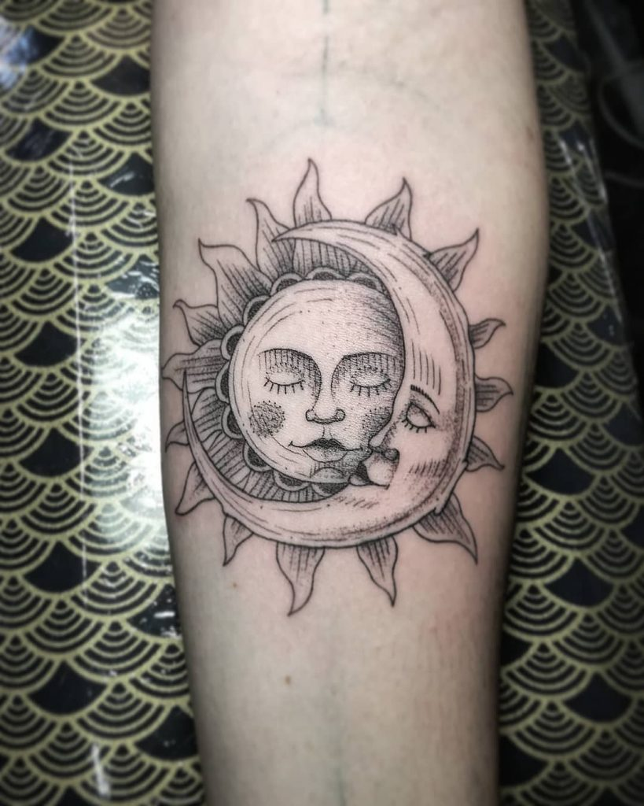
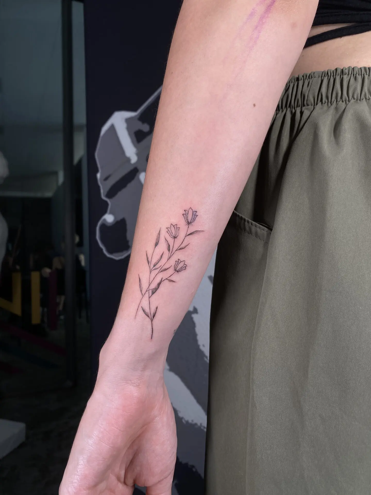
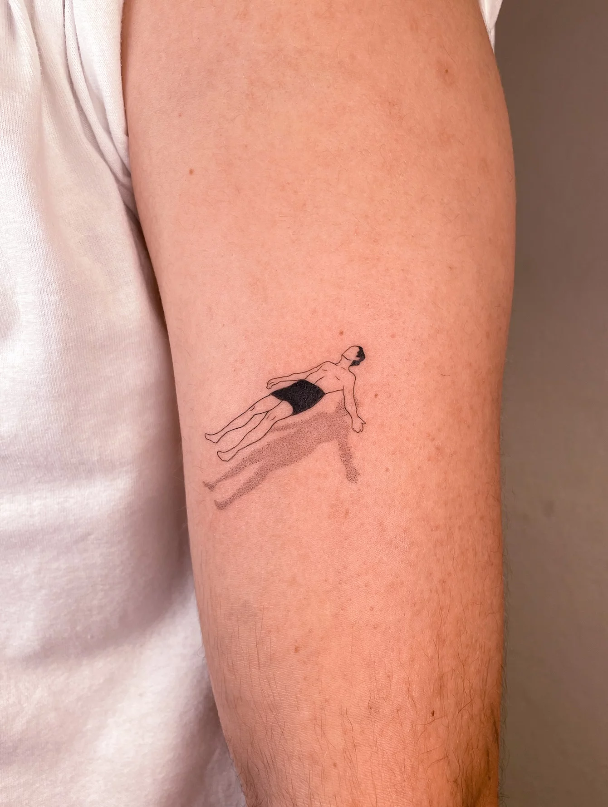
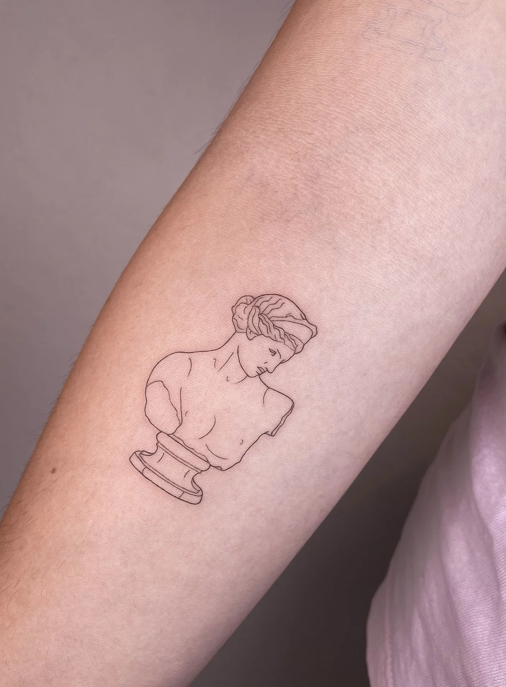
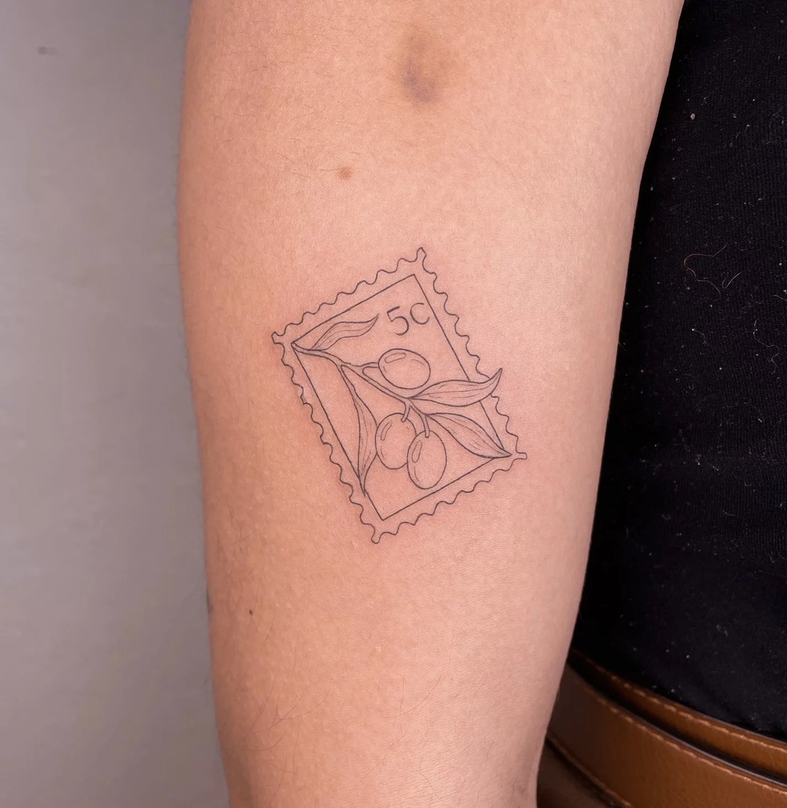
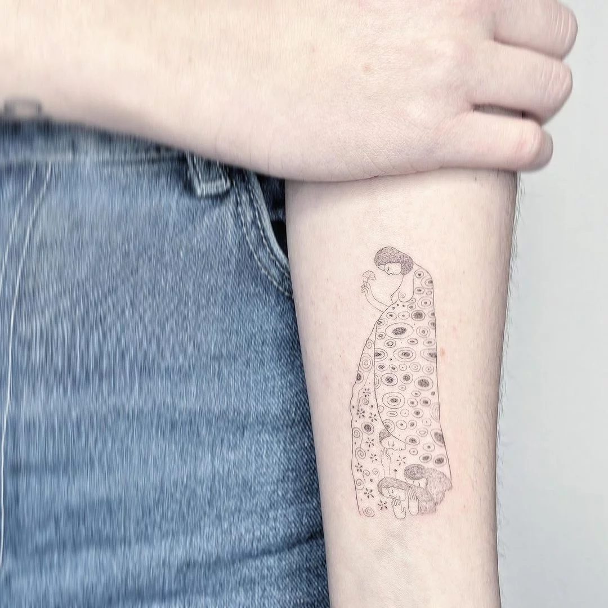
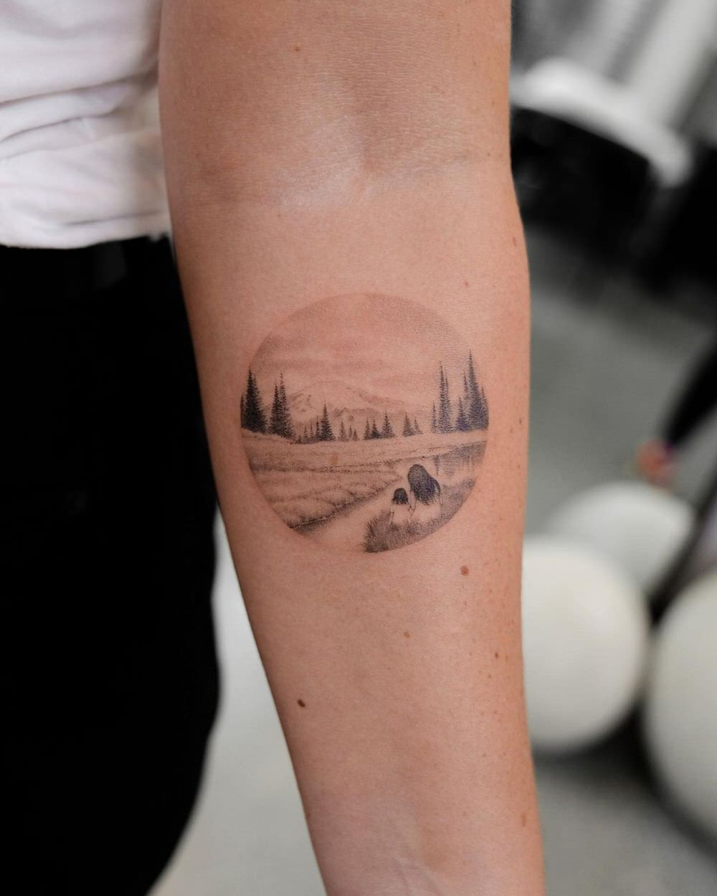
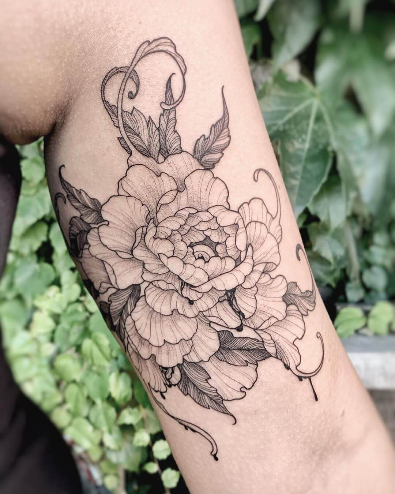
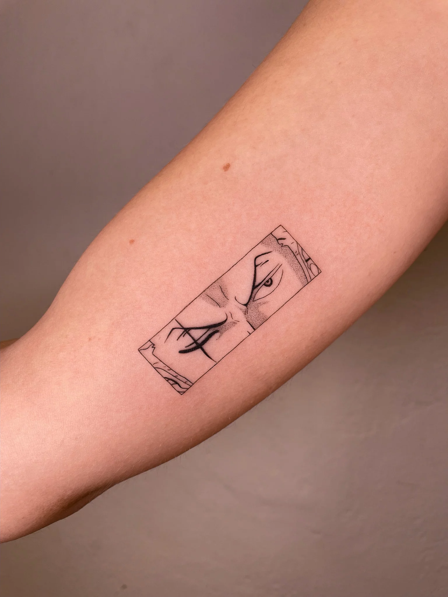

Fine Line
Stile
I tatuaggi fine line sono una specialità del tatuaggio moderno, che utilizza linee sottili e precise per creare disegni delicati, ideali anche per aggiungere piccoli particolari e dettagli, realizzare tatuaggi più piccoli e design più particolari e geometrici che possono richiedere maggior cura e precisione.
Photogallery








